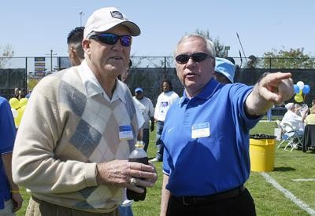
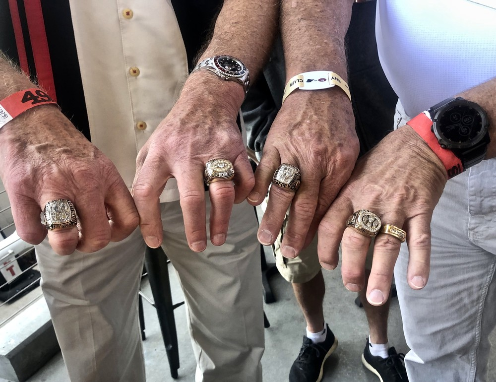
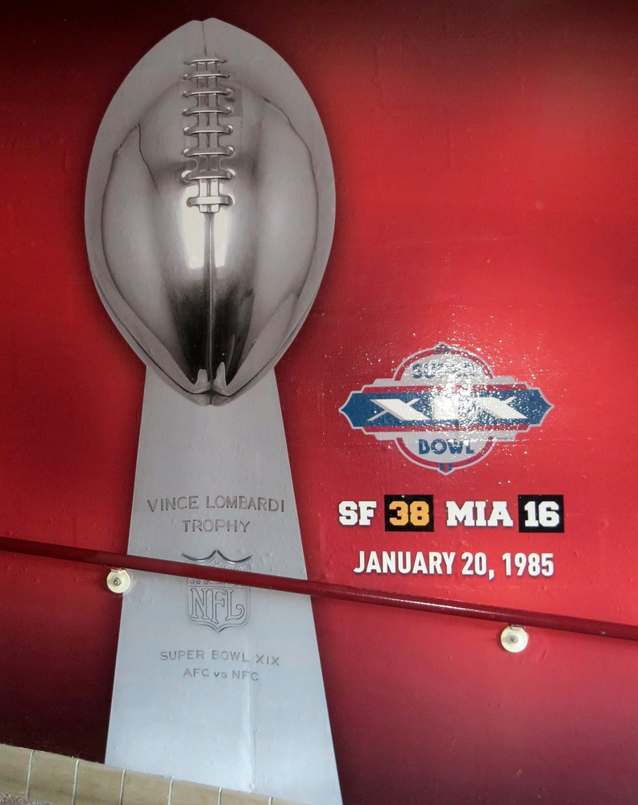
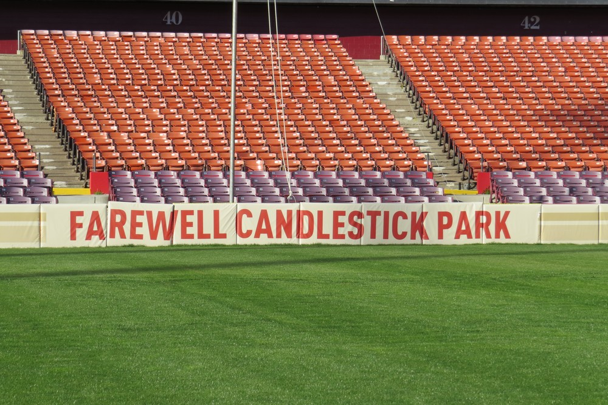

Bill Walsh
He took a 2 and 14 team, scripted the first plays on a sheet of paper, and turned it into the team of the decade in three seasons.
The Bill Walsh Story
Before Bill Walsh, the 49ers were a punchline. They'd gone 2 and 14 in 1978. Ten years later they had three Super Bowl trophies and an offense half the league was trying to copy. Everything we brag about as 49ers fans runs back through one guy with a clipboard and a script.
He was one of us before he was ours. Born in Los Angeles on November 30, 1931, he went to Hayward High, played quarterback at the College of San Mateo, then played end and boxed at San Jose State, where he earned his bachelor's and his master's. His first head job was at Washington High in Fremont, coaching football and swimming.
Marv Levy hired him onto the staff at Cal, then he coached at Stanford, then in 1966 he went to work for Al Davis and the Raiders. In 1968 Paul Brown brought him to the expansion Cincinnati Bengals, and that's where the thing we now call the West Coast offense was born. His quarterback, Virgil Carter, couldn't throw deep, so Walsh built a horizontal passing game of quick, short throws spread across the whole field. Carter led the league in completion percentage.
Walsh wanted Brown's job. When Brown retired after 1975 and handed it to somebody else, Walsh left, spent 1976 with the Chargers, and took over Stanford in 1977. He went 9 and 3 with a Sun Bowl win, then 8 and 4 with a Bluebonnet Bowl win, and Eddie DeBartolo came calling.
On January 10, 1979, he became head coach of the 49ers. The first year looked like the year before, 2 and 14 again. But that spring he'd drafted a Notre Dame quarterback named Joe Montana in the third round, and he was rebuilding the whole building underneath the record.
In 1980 he handed Montana the job, and on December 7 Montana brought the 49ers back from 35 to 7 down at halftime to beat the Saints 38 to 35 in overtime. A year after that, the 49ers went 13 and 3. They beat the Rams twice and the Cowboys twice, won The Catch game at Candlestick, and on January 24, 1982, beat Cincinnati 26 to 21 in Super Bowl XVI. Two years removed from two win seasons, they were champions.
He did it with paper. Walsh scripted the first 15 or so offensive plays before every game, and people started calling him The Genius. In his ten seasons the 49ers scored 3,714 points, more than any team in the league. He also kept finding Hall of Famers: Ronnie Lott, Charles Haley, Jerry Rice, and then a trade for Steve Young.
The 1984 team went 15 and 1 and beat Dan Marino's Dolphins 38 to 16 in Super Bowl XIX at Stanford Stadium, right here on the Peninsula. He was named NFL Coach of the Year in 1981 and again in 1984.
His last game was Super Bowl XXIII on January 22, 1989, against Cincinnati again, and the 49ers won it 20 to 16. Walsh resigned right after. Years later he admitted he'd left too soon. His record with us: 102 wins, 63 losses and a tie counting the playoffs, 10 and 4 in the postseason, six division titles, three titles.
He didn't stay away. He called games for NBC with Dick Enberg, came back to Stanford in 1992 and went 10 and 3 with a share of the Pac 10 title and a Blockbuster Bowl win, and later ran the 49ers front office as general manager from 1999 to 2001. In 1987 he started the Minority Coaching Fellowship, and his coaching tree reaches from George Seifert and Mike Holmgren all the way to coaches still on sidelines today.
He went into the Pro Football Hall of Fame in 1993. He died of leukemia at his home in Woodside on July 30, 2007. He was 75. The field at Candlestick was renamed Bill Walsh Field, and the San Jose State and Stanford game became the Bill Walsh Legacy Game.
What He Meant to Us
Every time I hear somebody call a team's offense 'West Coast' I want to tell them where that came from. It came from our coach, drawing up short throws for a quarterback in Cincinnati who couldn't throw deep, and then bringing it home to Candlestick and winning three rings with it.
What gets me is how fast he did it. 2 and 14, then 2 and 14 again, then 6 and 10, and then a Super Bowl. People forget that first year looked exactly like the year before. He'd already drafted Montana. He knew. The rest of us just hadn't caught up yet.
And he found everybody. Montana in the third round, Lott, Rice, Haley, Roger Craig, a trade for Steve Young. If you made a list of the best 49ers ever, half of it would be guys Bill Walsh went and got.
He was a Bay Area guy all the way through, Hayward, San Mateo, San Jose State, Fremont, Cal, Stanford, the Raiders, and then us. When he died in Woodside in 2007 it felt like losing the architect of the whole house. I still think of the field at the Stick as Bill Walsh Field.
In Pictures



Why He Was Clutch
A coach doesn't make a tackle or catch a ball, so clutch for Bill Walsh means the calls he made when the season was on the line. Ten playoff wins in fourteen tries, and three for three in Super Bowls.
Look at the drive that ended with The Catch. Dallas sat back in a prevent defense, sure the 49ers would throw, and Walsh called run after run to march down the field before Montana found Dwight Clark. He set up the most famous play in franchise history by doing what the other sideline didn't expect.
And he went out on top. His last game was a Super Bowl against Cincinnati, and the 49ers won it 20 to 16. Not many coaches get to write their own ending like that.
Clutch Moments
- 1979
Drafting Joe Montana
In his first draft with the 49ers, Walsh took a Notre Dame quarterback named Joe Montana in the third round. The team went 2 and 14 that season, but the most important piece of the dynasty was already in the building.
- December 7, 1980
Down 35 to 7 at the half
Walsh had just turned the offense over to his second year quarterback. Against the Saints at Candlestick, Montana led the 49ers back from a 35 to 7 halftime deficit to win 38 to 35 in overtime. The team finished 6 and 10, but you could see what was coming.
- January 10, 1982
The Catch
The NFC Championship at Candlestick against Dallas. Walsh called a string of runs against a Cowboys prevent defense that expected passes, and the drive ended with Montana to Dwight Clark in the back of the end zone with 58 seconds left. 49ers 28, Cowboys 27.
- January 24, 1982
Super Bowl XVI
Two weeks later in Pontiac, the 49ers beat Cincinnati 26 to 21 for the first championship in franchise history, two seasons after back to back two win years.
- January 20, 1985
Super Bowl XIX at Stanford Stadium
After a 15 and 1 season, the 49ers beat Dan Marino and Miami 38 to 16 in a Super Bowl played on the Peninsula. Walsh was named NFL Coach of the Year for the second time.
- January 22, 1989
One last ring, then goodbye
Super Bowl XXIII against Cincinnati again. The 49ers won 20 to 16, and Walsh resigned after the game, walking away with three titles in ten seasons.
- 1993
Canton
Walsh was elected to the Pro Football Hall of Fame, four years after his last game on the 49ers sideline.
The Highlights
What They Said About Walsh
“If you gave him a blackboard and a piece of chalk, he would become a whirlwind of wisdom.”
“I was very impressed, individually, by his knowledge, by his intelligence, by his personality and hired him,”
“But he told me then, he said, 'Marv, I don't have long.' He said it honestly.”
“All the way through I had opportunities, and I never knew about them”
Career Stats
| Year | Team | W | L | T | Pct | Finish | Postseason |
|---|---|---|---|---|---|---|---|
| 1979 | SF | 2 | 14 | 0 | .125 | 4th NFC West | |
| 1980 | SF | 6 | 10 | 0 | .375 | 3rd NFC West | |
| 1981 | SF | 13 | 3 | 0 | .812 | 1st NFC West | Won Super Bowl XVI, 3 and 0 |
| 1982 | SF | 3 | 6 | 0 | .333 | 11th in NFC | |
| 1983 | SF | 10 | 6 | 0 | .625 | 1st NFC West | Lost NFC Championship to Washington, 1 and 1 |
| 1984 | SF | 15 | 1 | 0 | .938 | 1st NFC West | Won Super Bowl XIX, 3 and 0 |
| 1985 | SF | 10 | 6 | 0 | .625 | 2nd NFC West | Lost Wild Card to the Giants |
| 1986 | SF | 10 | 5 | 1 | .656 | 1st NFC West | Lost Divisional to the Giants |
| 1987 | SF | 13 | 2 | 0 | .867 | 1st NFC West | Lost Divisional to Minnesota |
| 1988 | SF | 10 | 6 | 0 | .625 | 1st NFC West | Won Super Bowl XXIII, 3 and 0 |
| Career | 92 | 59 | 1 | .609 | 10 seasons | 10 and 4 in the postseason, 3 titles |
Regular season record. 1982 was cut to nine games by the players strike. Counting the playoffs, Walsh went 102 and 63 and 1 with the 49ers. Scroll the table sideways on a phone.
Stanford head coaching record
| Year | Team | W | L | T | Conf | Finish | Bowl |
|---|---|---|---|---|---|---|---|
| 1977 | Stanford | 9 | 3 | 0 | 5 and 2 | T 2nd Pac 8 | Won Sun Bowl |
| 1978 | Stanford | 8 | 4 | 0 | 4 and 3 | T 4th Pac 10 | Won Bluebonnet Bowl |
| 1992 | Stanford | 10 | 3 | 0 | 6 and 2 | T 1st Pac 10 | Won Blockbuster Bowl |
| 1993 | Stanford | 4 | 7 | 0 | 2 and 6 | T 8th Pac 10 | |
| 1994 | Stanford | 3 | 7 | 1 | 2 and 6 | T 8th Pac 10 | |
| Career | 34 | 24 | 1 | 19 and 19 | 5 seasons | 3 bowl wins |